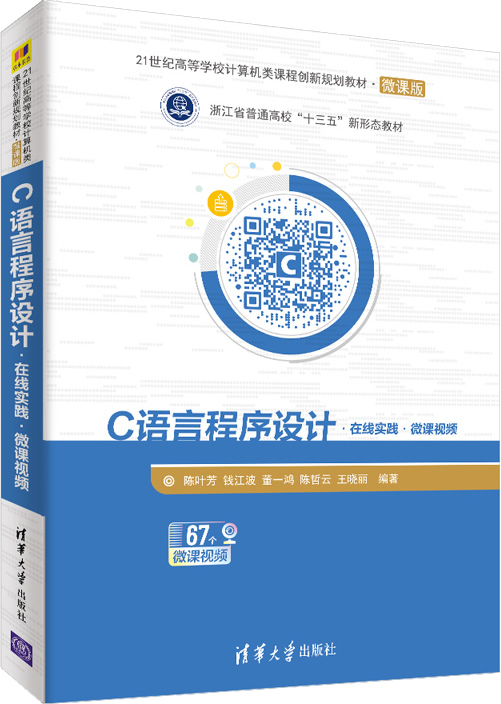

首页 > 书籍下载
《C语言程序设计(在线实践·微课视频)》陈叶芳PDF下载（高清完整版）
|  | 作者：陈叶芳、钱江波、董一鸿、陈哲云、王晓丽 |
| 出版时间：2021年02月01日 | |
| 出版社：清华大学出版社 | |
| 书号ISBN：9787302573951 | |
| 总页数：416 | |
| 总字数：64.8W |
这是一本经典的 C 语言入门书籍，书籍配套视频和线上练习平台（NBUOJ），很多大学把它作为课堂教材。
这里提供的是《C语言程序设计(在线实践·微课视频)》陈叶芳的高清 PDF 下载，内容完整，附带目录标签。
这本书最大的特点，就是配套丰富的学习资源：
- 作者录制了和书籍内容匹配的视频，已发布到智慧树等平台，书中提供有相应视频的链接，方便读者获取当前内容的视频资源；
- 学习过程中，读者可以将书中的案例提交到 NBUOJ 系统上，系统可以实时对提交的代码进行评判。
考虑到零基础的初学者，这本书还穿插了大量的图和表来讲解知识点，便于读者理解。作为一名老程序员，建议读者先阅读类似《C语言程序设计(在线实践·微课视频)》陈叶芳这样的 C 语言入门书籍，等具备一定的 C 语言基础后，可以再阅读《C Primer Plus》更深层次地理解 C 语言。
书籍目录
- 第1章 计算机与程序设计概述
- 1.1 计算机硬件
- 1.2 计算机中数据的表示
- 1.3 计算机软件
- 1.4 程序设计语言
- 1.5 算法基础
- 1.6 习题
- 第2章 顺序结构程序设计
- 2.1 C语言要素
- 2.2 变量和赋值
- 2.3 运算符与表达式
- 2.4 数据的输入/输出
- 2.5 用C编写数学公式
- 2.6 实例研究
- 2.7 习题
- 第3章 选择结构程序设计
- 3.1 关系运算符和关系表达式
- 3.2 逻辑运算符和逻辑表达式
- 3.3 if语句
- 3.4 条件运算符和条件表达式
- 3.5 选择结构的嵌套
- 3.6 switch…case语句
- 3.7 实例研究
- 3.8 习题
- 第4章 循环结构与基础算法
- 4.1 程序中的重复
- 4.2 while语句
- 4.3 do…while语句
- 4.4 for语句
- 4.5 循环的嵌套
- 4.6 基础算法
- 4.7 提前结束循环的流程控制
- 4.8 实例研究
- 4.9 习题
- 第5章 数组
- 5.1 一维数组
- 5.2 一维数组与排序
- 5.3 二维数组
- 5.4 字符数组和字符串
- 5.5 高精度加法
- 5.6 实例研究
- 5.7 习题
- 第6章 函数
- 6.1 函数的基本概念
- 6.2 函数定义
- 6.3 函数调用
- 6.4 函数声明
- 6.5 函数的嵌套调用
- 6.6 函数的递归调用
- 6.7 实例研究
- 6.8 习题
- 第7章 指针
- 7.1 指针的基本概念
- 7.2 指针变量的使用
- 7.3 指针与一维数组
- 7.4 指针与二维数组
- 7.5 指针与字符串
- 7.6 指针作函数参数
- 7.7 指针数组
- 7.8 指针与函数
- 7.9 二级指针
- 7.10 实例研究——成绩系统
- 7.11 习题
- 第8章 程序结构
- 8.1 变量的作用域
- 8.2 变量的存储方式和生存期
- 8.3 内部函数和外部函数
- 8.4 编译预处理
- 8.5 习题
- 第9章 结构体、共用体和枚举类型
- 9.1 结构体
- 9.2 结构体数组
- 9.3 结构体指针
- 9.4 结构体与函数
- 9.5 贪心算法
- 9.6 共用体
- 9.7 枚举类型
- 9.8 实例研究
- 9.9 习题
- 第10章 文件
- 10.1 文件概述
- 10.2 文件的打开与关闭
- 10.3 文件的顺序读写
- 10.4 文件的定位与随机读写
- 10.5 实例研究——成绩系统
- 10.6 习题
- 第11章 指针的高级应用
- 11.1 链表的概念
- 11.2 动态内存分配
- 11.3 单链表
- 11.4 实例研究——成绩系统
- 11.5 习题
- 附录
-
附录A 常用字符与ASCII值对照表
- 附录B 基本数据类型及取值范围
- 附录C 常用运算符的优先级与结合性
- 附录D 常用库函数
- 附录E 常见错误分析
- 附录B 基本数据类型及取值范围
书籍下载
一键登录，免费下载完整版 PDF，文件名称：《C语言程序设计(在线实践·微课视频)》陈叶芳.pdf